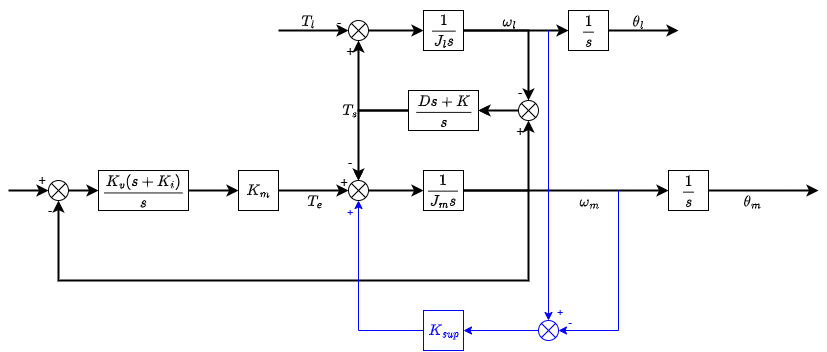
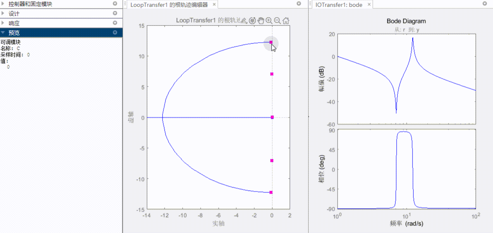
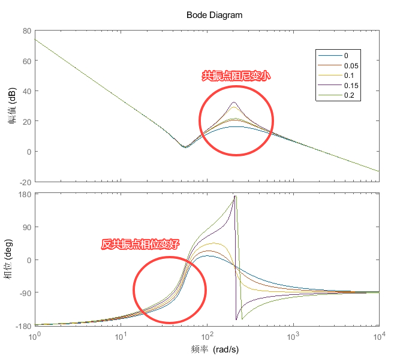
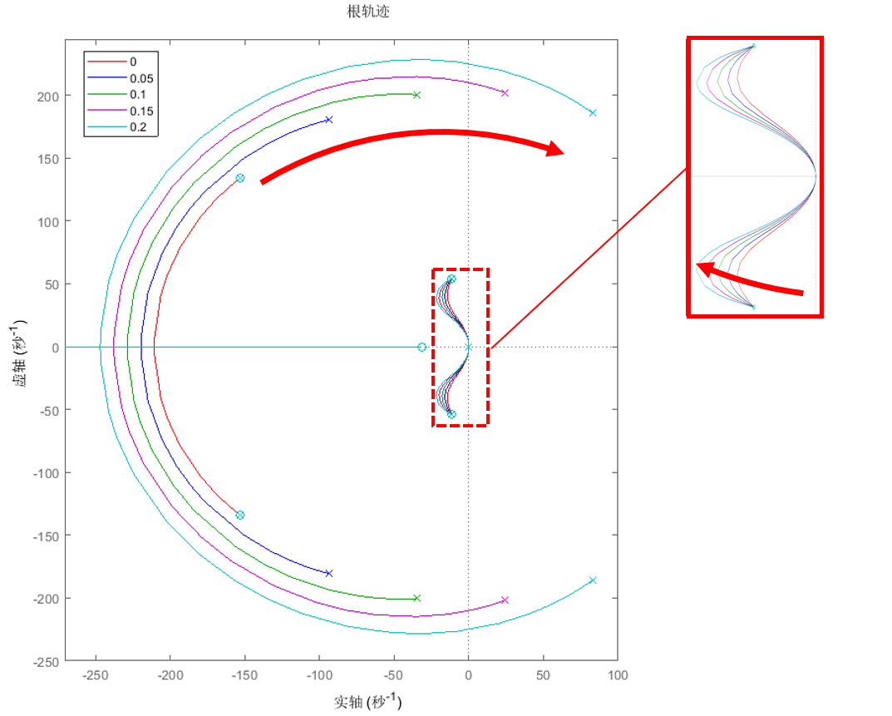
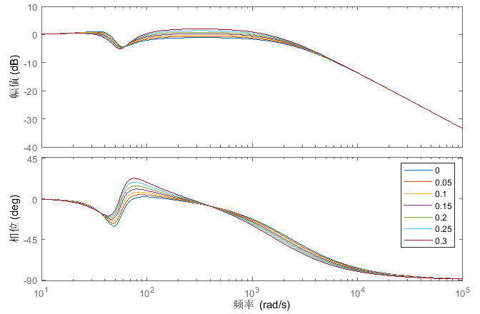
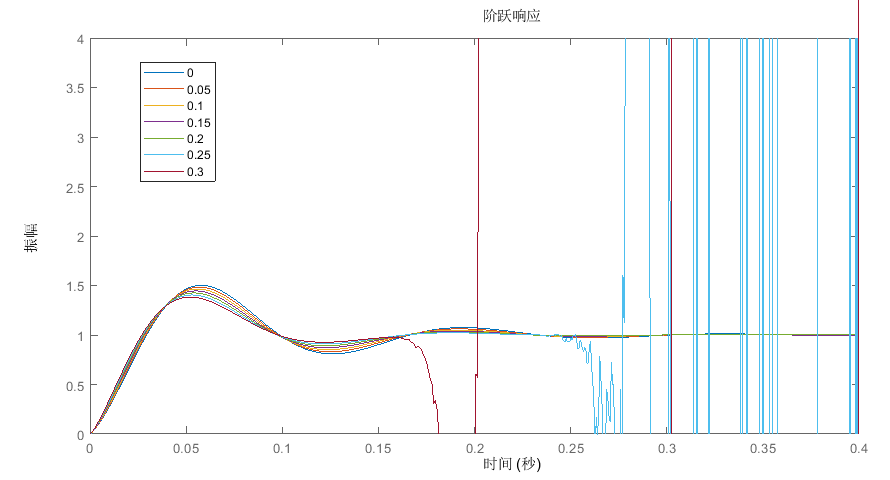

基于末端速度反馈的振动抑制
1. 控制率
基于双惯量模型，将末端与轴端速度作差，乘比例系数 ，反馈给转矩指令。

从转矩指令到电机速度的传函由：
变为：
随减小，共振点阻尼增大：

这种方式通过牺牲共振点阻尼，换取开环反共振点处相位，达到抑制振动效果。

2. 分析
系统一共有四个极点，两个在图中圆形轨迹上，是共振点闭环出的极点，另外两个在放大图中，是反共振点闭环出的极点。由于反共振点闭环出的极点离虚轴比较近，因此影响系统的振动更明显。如果能使极点远离虚轴，那么系统响应就会变好。
随着 增加（图中红色箭头方向）：

共振点开环极点阻尼变小，逐渐向虚轴方向移动，过大，甚至可能阻尼变负，有稳定性风险。
当时，共振点阻尼变负，闭环极点有可能会位于右半平面，系统不稳定。
反共振点（放大图）的根轨迹曲线随着增大远离虚轴，起到振动抑制效果。
观察闭环bode图：

反共振点处幅值降低，共振点处幅值增高。
能起到反共振点抑制效果，但共振点处可能发生振动。

可以看到随着 增大，振动幅值减小，但在时，系统不稳定。